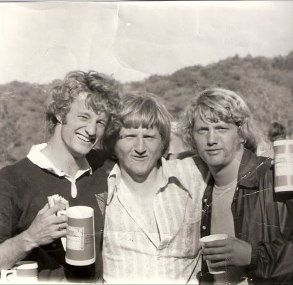
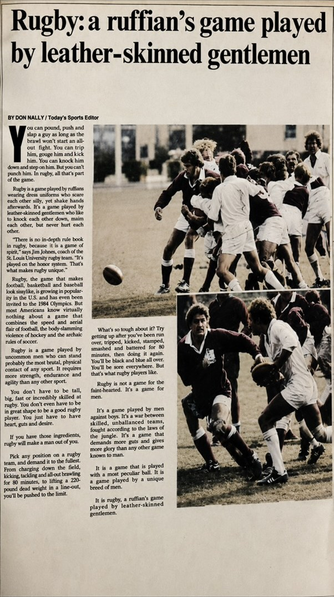
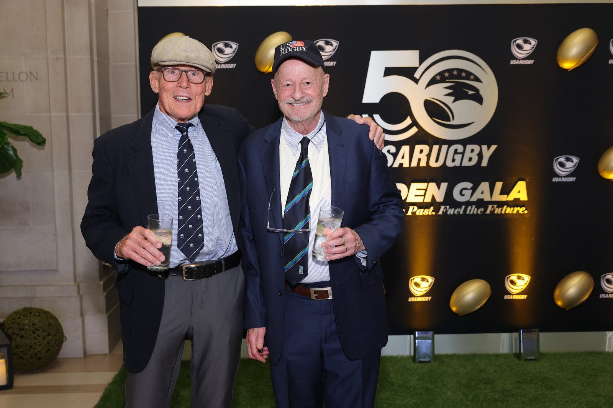
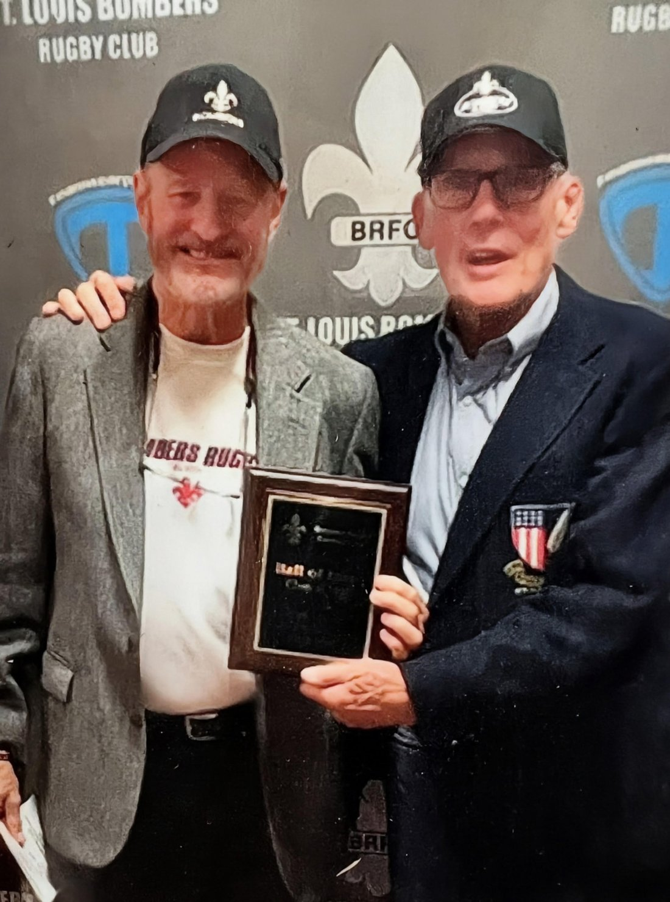

Rick Wetzel: The President Who Changed How Missouri Played
Every club has a season when it stops being a group of students who own a ball and starts being a rugby team. At Missouri that season was 1973–74, and the man at the centre of it wore number 10 and ran the club at the same time.
Richard Alan Wetzel came to Mizzou Rugby as a fly half and started nearly every match there — the exceptions being serious injuries, of which there were more than a few. He graduated in 1974 with a degree in political science, and served as club president through 1973 and 1974.
What He Changed
The change he made was tactical, and his teammates noticed it at the time. Jim Dierker, who played with him and has written the fullest account of those years, describes what Missouri rugby — and St. Louis Bombers rugby — looked like before Wetzel: forwards punished the other team, and when the backs finally got the ball they kicked it straight back to the forwards. Wetzel replaced that with something recognisable as modern rugby: advance in quick bursts, get the ball wide to the backs, loop, and start a second phase moving toward the try line. He orchestrated it from standoff, play after play, planned or improvised.
It worked. Missouri had two winning seasons under his presidency, losing in the college ranks mainly to Central Methodist and taking its defeats from top city clubs in open competition. In one home match at Reactor Field in 1974 Wetzel scored twice and set up two more tries as Missouri beat the KC Blues 35–28 — a student side outscoring an established men's club.
The First Big Eight Championship
The season is remembered for something bigger. Wetzel and his vice-president, Pat Costigan, decided the Big Eight ought to have a rugby tournament and then built one from nothing — the invitations, the draw, the grounds, the officials, and a sponsor. They did it as students carrying full course loads and playing every weekend. Kansas State's club wrote afterwards to call it “the best organized tournament we've had the pleasure to participate in.”
Then he played in it, at fly half. Missouri blanked Kansas State 34–0, beat Nebraska 16–4, and held off Iowa State 19–18 in a championship match at Reactor Field that featured Wetzel landing a rarely-seen drop goal. Missouri became the first Big Eight rugby champion. Afterwards he gave the Columbia Missourian a one-line explanation: “Our backs and scrum were just too fast for Iowa State today.” The full story is on the 1973–74 season page, and the St. Louis Post-Dispatch clipping about the title survives because Wetzel kept it in his scrapbook.

The Jerseys, the Vans and the Bread Truck
The president's job in a club with no money is mostly logistics, and Wetzel treated it as an opportunity rather than a chore. Before him Missouri played in t-shirts or a motley assortment of old rugby and football kit; he made sure the club got proper jerseys. He organised the vans and carpools that got a squad to Rolla, Kansas City, St. Louis and, on one occasion, on a rugby safari to Iowa to play Iowa State and Des Moines — a trip his teammates still refer to as the bread truck adventure. He made sure post-match hospitality was ready and waiting when the players came off.
He also did something more consequential by example. While leading the Tigers on Saturdays, Wetzel started turning out for the St. Louis Bombers on Sundays, hitchhiking to and from the matches. Teammates followed him there, during college and after it — a pipeline between Columbia and St. Louis that shaped Mizzou rugby for a generation. John Tarpoff, Pat Costigan and Jim Dierker all ended up in that orbit.
After Columbia
Wetzel played for the Bombers from 1974 to 1978, toured with the St. Louis Gateway United side in 1975, and represented the Missouri Rugby Football Union in 1975–76 — including in the first ever Western Rugby Championships in 1975. He moved to North Carolina and played second centre for the Greensboro Rugby Club from 1978 to 1984, made the North Carolina select side in 1981, and toured England with the Avenging Mallards in January 1982. He is a member of the St. Louis Bombers Hall of Fame.
The list of what it cost him is its own kind of record: a separated shoulder, a broken collarbone and two broken legs. He kept playing until he was thirty-four.

Still Reaching
In May 2026, at seventy-four, Wetzel took a Master of Divinity with honours from the Wake Forest University School of Divinity. He is now a chaplain resident at Moses Cone Hospital in Greensboro, North Carolina — which is to say he is still doing the thing he did at Missouri: turning up for people on the days that are difficult.
He has supported Mizzou Rugby steadily over the years and bought alumni jerseys whenever the club has sold them as a fundraiser. He and Pat Costigan have stayed close for more than fifty years, and it was Wetzel who supplied one of the best descriptions of what the game was for: “Rugby has a way of revealing character. When a match becomes difficult and everyone is tired, you learn very quickly which teammates you can depend upon.”


“Rick will go down in Missouri Rugby history as a passionate player who led the way to make Mizzou a winner on and off the pitch.” — Jim Dierker
Career details and recollections in this profile come from his teammate Jim Dierker, with photographs from Wetzel's own collection, August 2026. Match quotes are from the Columbia Missourian, March 1974. Can you add to this account? Get in touch.